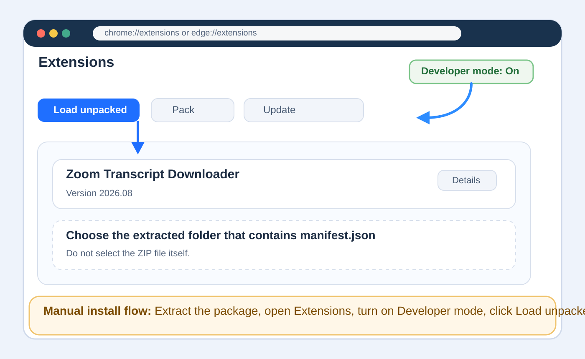
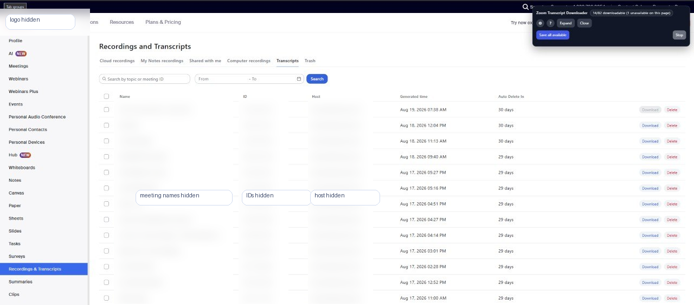
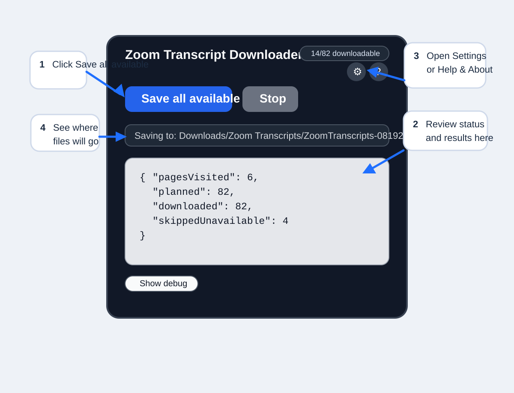
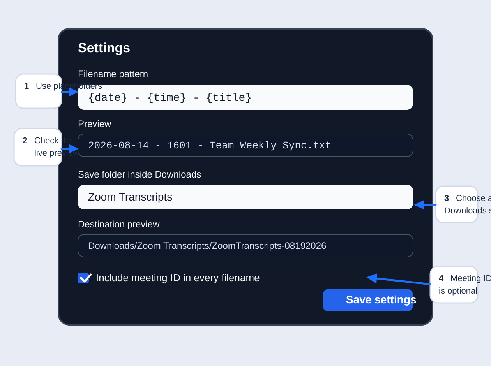

Zoom Transcript Downloader User Guide
Version 2026.08
Open your Zoom Transcripts page, wait for the panel to appear, click Save all, and keep the tab open until the run finishes.
Choose The Installation Method
Recommended: Chrome Web Store
- Open the direct listing link.
- Select Add to Chrome.
- Approve the install prompt.
- Confirm the extension appears in the browser Extensions menu.
https://chrome.google.com/webstore/detail/lbmejjnmnbjnoahehjfmhaiheopkgcdg
This listing is private or unlisted, so users normally open it from the direct link.
Alternative: Manual Install
- Download the package and extract it if it is a ZIP file.
- Open chrome://extensions or edge://extensions.
- Turn on Developer mode.
- Select Load unpacked.
- Choose the extracted folder that contains manifest.json.

Manual installation overview for Chrome or Edge.
Go To The Correct Zoom Page
- Sign in to your Zoom web portal.
- Open the area that contains recording transcripts.
- Select the Transcripts tab or view.
- Confirm transcript rows are visible.
Example URL format: https://your-company.zoom.us/recording/meeting/transcript

Example Zoom Transcripts page. Your Zoom hostname and layout may vary.
Save All Available Transcripts
- Open the Zoom Transcripts page.
- Confirm the Zoom Transcript Downloader panel is visible.
- Click Save all.
- Use Save page if you only want the transcripts visible on the current page.
- Keep the Zoom tab open while the extension works.
- Wait for the completion message.

The main panel keeps the primary workflow short and visible.
What happens automatically
- The extension returns to page 1 before starting.
- It reviews the transcript pages to plan final filenames.
- It saves the transcript text files Zoom currently allows.
- It skips transcript rows that Zoom marks as unavailable.
- It reports the result when finished.
Where Your Files Go
Files save inside your browser's normal Downloads location. You can choose a folder underneath Downloads, such as Zoom Transcripts or Work/Zoom.
Customize File Names And Download Location

Use Settings to control filenames and the Downloads subfolder.
Default filename
{date} - {time} - {title}
Example result: 2026-08-14 - 1601 - Team Weekly Sync.txt
Meeting ID
Meeting ID is optional by default. The extension adds it automatically if two transcripts would otherwise receive the same filename.
| Placeholder | Meaning | Example |
|---|---|---|
| {date} | Meeting date | 2026-08-14 |
| {time} | Meeting time | 1601 |
| {title} | Zoom meeting title | Team Weekly Sync |
| {meetingId} | Zoom meeting ID | 12345678901 |
Use the previews
The Settings dialog shows both a filename preview and a destination preview. Check them before you save your settings.
Common Problems
Panel does not appear
- Confirm you are on the Zoom Transcripts page.
- Refresh the page.
- Make sure the extension is installed and enabled.
- Reopen it from the browser Extensions menu.
No transcripts are found
- Make sure transcript rows are visible in Zoom.
- Confirm you are on Transcripts, not another recordings view.
- Refresh the page and wait for the list to finish loading.
Browser prompts for every file
- Open the browser download settings.
- Turn off the setting that asks where to save each file before downloading.
- Run the batch again.
Page changed during the run
- Refresh the Zoom page.
- Wait for the transcript list to finish loading.
- Start Save all again.
Advanced troubleshooting
Use Show debug only when you are reporting a problem. The debug view may include meeting titles, meeting IDs, page information, and Zoom page URLs.
Keep The Extension Current
Chrome Web Store install
Browser-installed extensions normally update automatically.
Manual install
- Update the local extension files.
- Open chrome://extensions or edge://extensions.
- Select Reload for Zoom Transcript Downloader.
- Refresh the Zoom page.